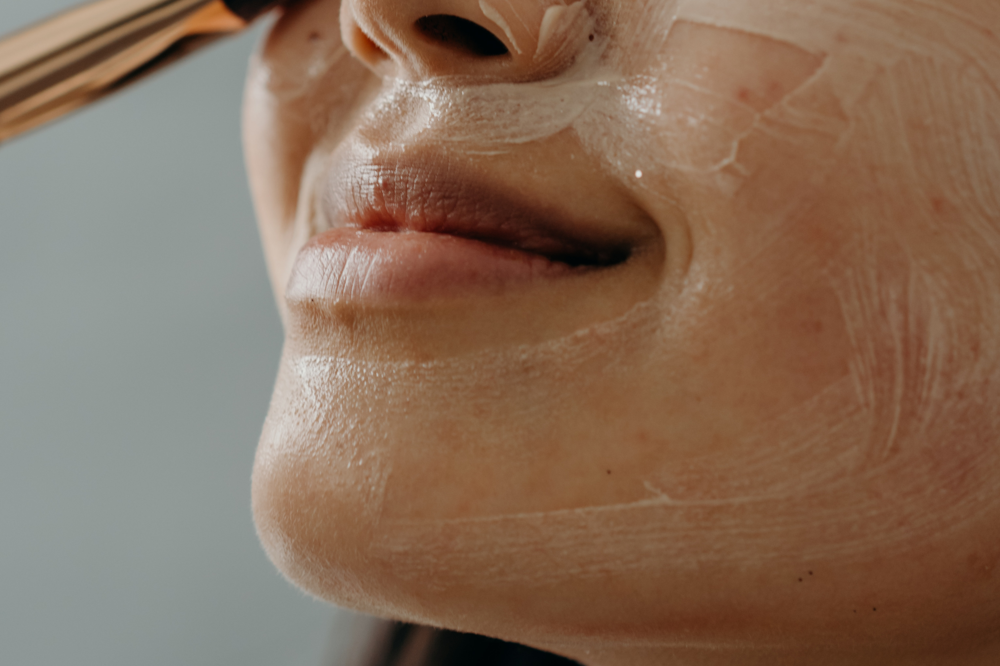

OUR COURSES
What You Can Learn
Technical and Vocational Senior High School
located in District II of Manila, offering
-
Cookery
The TVL-Culinary strand, anchored on the Culinary Arts program, specializes in NC-II Cookery and NC-III Commercial Cookery. Students will learn basic culinary skills that will let them prepare food for various clientele from one person to large groups.
TVL-HE is designed to develop students' skills useful for livelihood projects at home. -
SMAW
Shielded metal arc welding (SMAW), also known as manual metal arc welding, is a manual arc welding process that uses a consumable and protected electrode.
As the electrode melts, a cover that protects the electrode melts and protects the weld area from oxygen and other atmospheric gases. -

Automotive
Automotive Servicing is a technical-vocational program that trains students on how to inspect, maintain, and repair light and heavy-duty automotive vehicles.
TVL Strand is designed to develop students' skills that is useful for livelihood and technical projects. It provides a curriculum that is a combination of Core Courses and specialized hands-on courses that meets the competency-based assessment of TESDA. -

ICT
Information Communication and Technology or ICT Strand is one of the strands offered under Technical-Vocational Livelihood (TVL) Track of K-12 curriculum.
Information Communication and Technology or ICT strand is one of the strands offered in the Technical-Vocational-Livelihood (TVL) Track in senior high school. It is designed to provide you with the technical skills and knowledge in using tools and equipment that allows people to interact in the digital world. -

Beauty Care
The BEAUTY CARE NC II Qualification consists of competencies that a person must achieve to perform pre and post beauty care services, perform manicure and pedicure, perform hand spa, perform body massage, perform body scrub, perform facial treatment, perform foot spa and apply facial make-up.
Beauty care is basically the science of beauty treatment that involves skin care, hair care, manicure, pedicure, Anti- aging treatments, facials, styling and so on. It aims at giving you a well groomed look that makes you more attractive. It is also known as Cosmetology. -

Electronics
Consumer Electronics Servicing NC II is a short TESDA course in the Philippines that will train you repairing electronic gadgets and appliances such as mobile phones, televisions, radios, and other similar products. Some examples of skills that you will acquire from enrolling in this course include: Using hand tools.
Electronics is a branch of physics concerned with the design of circuits and the study of electrons under a variety of conditions. Electrical engineers oversee the design, testing, manufacture, construction, and monitoring of electrical and electronic devices, machinery, and systems. -

Electrical Installation and Maintenance
The Electrical Installation and Maintenance NC II Qualification consists of competencies that a person must achieve to enable him/her to install and maintain electrical wiring, lighting and related equipment and systems where the voltage does not exceed 600 volts in residential houses/buildings.
This course is designed to develop & enhance the knowledge, skills, & attitudes of an electrical, mechatronics and automation technician, in accordance with industry standards.